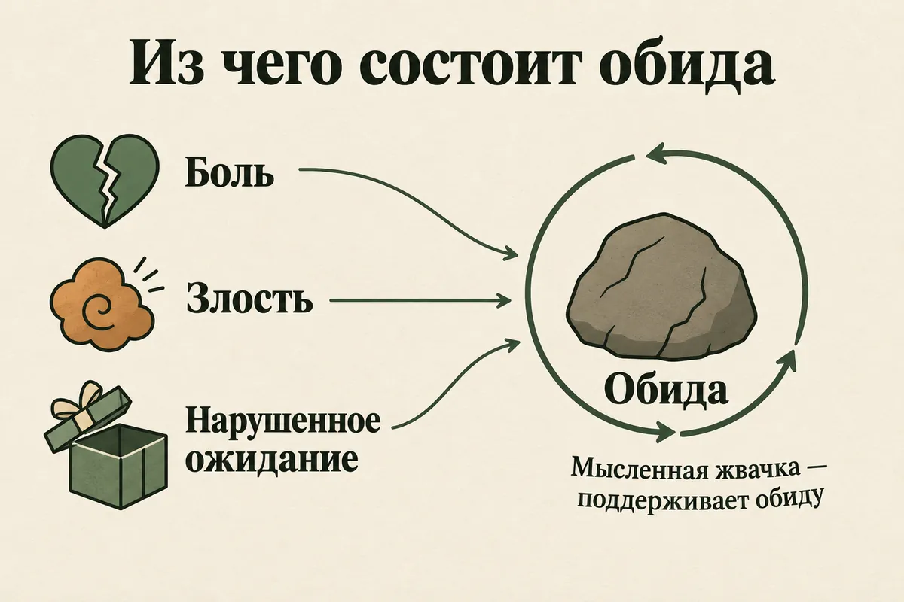
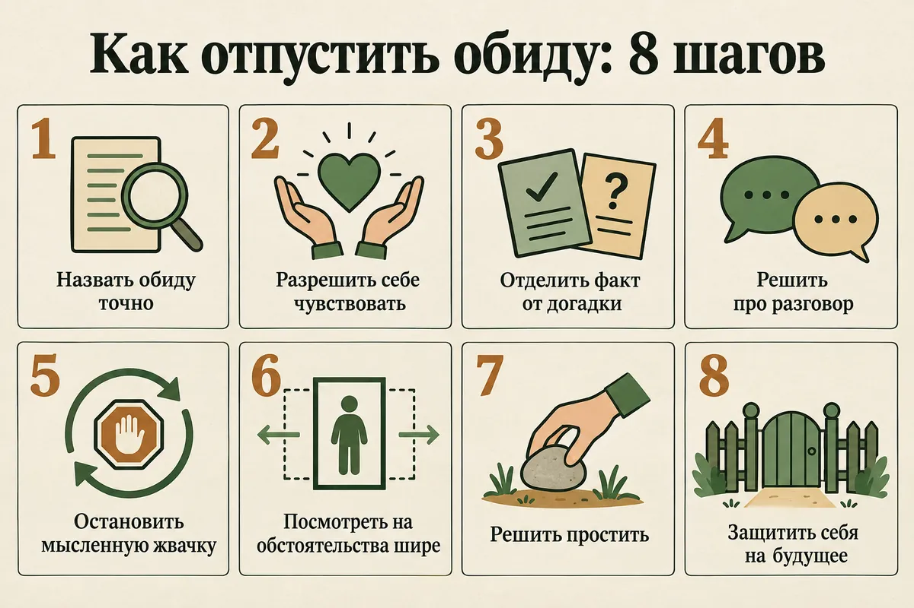
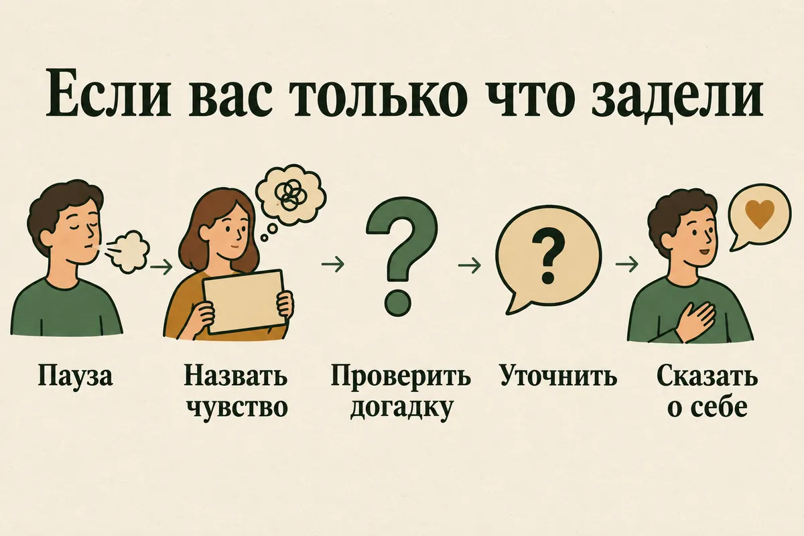

Главная → Блог → Как простить обиду
Как простить обиду и отпустить её: 8 шагов, которые работают
Обновлено: 28.09.2026 · 18 минут чтения
Прошло полгода, год, а может, десять лет — а внутри всё так же сжимается, стоит вспомнить тот разговор, тот поступок, те слова. Простить обиду — не значит забыть, оправдать того, кто обидел, или помириться с ним. Это значит перестать носить боль с собой и вернуть себе решение, как жить дальше. Прощению можно научиться: в исследованиях даже короткие программы по несколько часов заметно снижают обиду, а вместе с ней — хоть и скромнее — тревогу и подавленность. Ниже — из чего складывается обида, почему она не проходит сама, что делать, если вы обижаетесь по пустякам, и 8 шагов, которые помогают отпустить даже давнюю обиду.
- Что такое обида простыми словами
- Почему обида не проходит
- Обидчивость: почему я обижаюсь по пустякам
- Зачем нужна обида и чем она вредит
- Что значит простить — и чего прощение не требует
- Как отпустить обиду: 8 шагов
- Упражнение «Письмо, которое не отправляют»
- Как перестать обижаться в моменте
- Обида на близких: партнёр, родители, бывший
- Когда прощать не обязательно
- Чего делать не стоит
- Когда обращаться к психологу
- Частые вопросы
Что такое обида простыми словами
Обида — это переживание, которое возникает, когда значимый для нас человек поступает с нами так, как мы считаем несправедливым. В ней почти всегда смешаны три вещи: боль («мне сделали больно»), злость («так нельзя») и нарушенное ожидание («я думал, что он так не поступит»). Именно третья часть отличает обиду от простой злости: на незнакомца в очереди мы злимся, а обижаемся — на тех, от кого ждали другого.
Поэтому сильнее всего обижают близкие: мама, партнёр, друг, коллега, которому доверяли. Чем важнее человек и чем выше были ожидания, тем глубже рана. Обида может быть на слова, на поступок, на то, чего не сделали, — не пришли, не поддержали, не заметили, — и даже на то, что человек просто оказался не таким, каким мы его представляли.
Отдельный признак обиды — ощущение долга. Кажется, что обидчик нам что-то должен: признать вину, извиниться, исправить, пострадать хоть немного. Пока долг не возвращён, обида держится. А поскольку вернуть его чаще всего невозможно или человек не собирается этого делать, она может тянуться годами.

Почему обида не проходит
Обида не проходит, потому что мы продолжаем её кормить: прокручиваем случившееся, мысленно спорим с обидчиком, ждём извинений. Само событие давно закончилось, а переживание каждый раз запускается заново.
- Мысленная жвачка. Психолог Майкл Маккалоу с коллегами в трёх исследованиях 2007 года проследил, как меняется готовность простить день за днём. В те дни, когда люди больше прокручивали обиду в голове, они меньше были готовы простить, и связывала эти две вещи именно злость на обидчика. Причём в третьем исследовании прокручивание, судя по всему, шло раньше, а снижение готовности простить — позже. Проще говоря, обида держится не столько на событии, сколько на том, как часто мы к нему возвращаемся. Если мысли ходят по кругу и не отпускают, пригодится и статья про навязчивые мысли.
- Ожидание извинений. Пока мы ждём, что человек поймёт, признает и попросит прощения, мы отдаём ему ключ от своего состояния. Если он этого так и не сделает — а часто так и бывает, — обида остаётся открытой.
- Чувство несправедливости. Кажется, что простить — значит позволить человеку «выйти сухим из воды». Обида становится способом хоть как-то восстановить справедливость: «я хотя бы помню, что он сделал».
- Невысказанность. Многие обиды никогда не были произнесены вслух. Человек, возможно, даже не знает, что задел вас, а вы годами ведёте с ним внутренний диалог.
- Повторение. Если человек продолжает поступать так же, обида не проходит, потому что каждый раз получает свежее подтверждение. Здесь вопрос уже не в прощении, а в личных границах.
- За обидой прячется другое чувство. Иногда обида — более «удобная» форма стыда, страха быть ненужным или горя. Злиться на другого легче, чем признать, что тебе больно или что ты тоже виноват.
Обидчивость: почему я обижаюсь по пустякам
Обидчивость — это склонность обижаться часто и сильно, в том числе на то, что другие люди не посчитали бы обидным. Если вы замечаете, что вас задевает каждое слово, это не черта характера, с которой ничего нельзя сделать, а сигнал, за которым обычно стоит одна или несколько причин.
- Неустойчивая самооценка. Когда ценность себя держится на одобрении других, любая критика, шутка или невнимание воспринимаются как подтверждение «со мной что-то не так». Об этом подробно — в статье как повысить самооценку.
- Высокая чувствительность к отвержению. Некоторые люди острее других реагируют на признаки того, что их не принимают: не ответили на сообщение, не позвали, перебили. Часто это связано с опытом детства, где потребности ребёнка долго не замечали, — подробнее в статье про детские травмы.
- Невысказанные ожидания. Мы ждём, что близкие догадаются сами: вспомнят про годовщину, предложат помощь, спросят, как прошёл день. Когда не догадываются, становится обидно, хотя они даже не знали, чего от них ждали.
- «Чтение мыслей». Мы приписываем человеку намерение, которого, может быть, не было: «он специально», «она меня не уважает». В когнитивно-поведенческой терапии это называют когнитивным искажением — и с ним можно работать.
- Усталость, недосып, голод, стресс. В истощённом состоянии порог чувствительности падает у всех. Если вы стали обидчивее в последние месяцы, сначала проверьте, сколько вы спите и сколько на вас сейчас навалено, — возможно, дело в выгорании.
- Депрессия и тревога. Повышенная ранимость, плаксивость и раздражительность бывают частью депрессии и тревожных расстройств. Если к обидчивости добавились подавленность, потеря интереса и нарушения сна, дело может быть не в характере.
Отдельно о случаях, когда обидчивость появилась внезапно. Если человек, особенно пожилой, за короткое время стал непривычно ранимым, подозрительным, плаксивым или конфликтным, это не всегда «испортился характер». Так иногда начинаются депрессия, последствия перенесённых болезней и возрастные изменения памяти и мышления. Лучше показаться терапевту, а он при необходимости направит к неврологу или психиатру.
| Обида, которая проходит | Обида, которая застряла | |
|---|---|---|
| Сколько длится | Часы, дни, иногда недели | Месяцы и годы, возвращается снова и снова |
| Что с мыслями | Вспоминается, но не захватывает | Прокручивается по кругу, мысленные споры с обидчиком |
| Что с отношениями | Можно обсудить и двигаться дальше | Холод, дистанция, «я ему это припомню» |
| Что с вами | Больно, но жизнь идёт | Злость, горечь, усталость, хуже сон, трудно радоваться |
| Что помогает | Разговор, время, поддержка | Осознанная работа с обидой, иногда с помощью психолога |
Зачем нужна обида и чем она вредит
Обида — не враг, а сигнал. Она сообщает, что задели что-то важное для вас: достоинство, доверие, ожидание заботы, чувство справедливости. Без этого сигнала мы бы не замечали, как с нами обращаются, и не могли бы защищать себя. Поэтому совет «просто не обижайся» бесполезен: чувство уже возникло, и у него есть причина.
Вредит не сама обида, а её застревание. Когда человек годами носит в себе горечь, это отнимает силы: мысли постоянно возвращаются к прошлому, отношения с обидчиком — а часто и с другими людьми — становятся настороженными, появляется ощущение, что мир несправедлив и доверять никому нельзя. Застрявшая обида нередко переходит в вспышки гнева, цинизм или отстранённость.
У неё есть и телесная сторона, хотя её часто преувеличивают. В эксперименте Шарлотты ванОйен Витвлиет 2001 года 71 человек вспоминал реального обидчика. Когда участники прокручивали обиду, у них сильнее поднимались пульс и давление, росло мышечное напряжение лица и электропроводность кожи — всё это признаки стресса, и они держались и после того, как упражнение заканчивалось. Когда же участники представляли, что прощают, стрессовая реакция была слабее, а ощущение контроля — выше. Это краткосрочная реакция в лаборатории, а не доказательство, что обида вызывает болезни, но механизм понятен: хроническая обида — это хронический стресс. В исследовании Лорена Туссена с коллегами у 148 молодых людей, которые легче прощали, пережитый стресс слабее сказывался на психическом здоровье. Это наблюдение, а не эксперимент, но оно согласуется с остальными данными.
Правда ли, что обида вызывает рак? Нет. Утверждения вроде «рак — от непрощённых обид» не подтверждаются исследованиями и опасны: они заставляют больного человека винить себя за свою болезнь. Обида, как и любой затяжной стресс, может ухудшать самочувствие и сон, но она не вызывает конкретных болезней. Подробнее — в статье про психосоматику.
Что значит простить — и чего прощение не требует
Простить — значит отказаться от права на месть и на вечный счёт к человеку и позволить обиде перестать управлять вашей жизнью. Это внутреннее решение, которое принимаете вы, и в нём нет обязательств перед обидчиком.
Многим прощение даётся тяжело, потому что его путают с другими вещами. Вот чего оно не требует:
| Что это | Нужно ли это, чтобы простить | |
|---|---|---|
| Забыть | Стереть случившееся из памяти | Нет. Память остаётся, уходит заряд: вспоминать становится не так больно |
| Оправдать | Признать поступок нормальным или допустимым | Нет. Можно простить и при этом считать, что поступили плохо |
| Помириться | Восстановить отношения, как было | Нет. Прощение — внутри вас, примирение — между двумя людьми, и для него нужно, чтобы другой изменился |
| Дождаться извинений | Получить признание вины | Нет. Если ждать извинений, ключ от вашего состояния остаётся у обидчика |
| Промолчать | Не говорить о своих чувствах | Нет. Прощение не отменяет права сказать, что вам было больно, и потребовать другого отношения |
Исследователи прощения различают два его уровня. Решение простить — это намерение не мстить и не требовать долга; его можно принять за один день. Эмоциональное прощение — это когда горечь действительно уходит и её место занимают более спокойные чувства; оно приходит постепенно, иногда за месяцы. Нормально, если вы уже решили простить, а обида всё ещё вспыхивает: это не значит, что вы «не простили по-настоящему», это значит, что процесс идёт.
И ещё одно: прощение — не обязанность. Вы можете решить, что не готовы или не хотите прощать конкретный поступок. Но и в этом случае полезно отпустить обиду — перестать прокручивать её и отдавать ей силы. Об этом — в разделе когда прощать не обязательно.
Как отпустить обиду: 8 шагов
Прощению можно научиться, и это одна из немногих тем в психологии, где есть проверенные программы. В метаанализе Натаниэля Уэйда с коллегами 2014 года собраны данные 54 исследований: люди, которые проходили специальные программы прощения, прощали заметно больше, чем те, кто не получал помощи, а ещё у них снижались депрессия и тревога и росла надежда. Чем дольше длилась программа, тем лучше был результат. В другом метаанализе такие программы уменьшали подавленность, злость и стресс у людей, переживших самые разные обиды.
Самые изученные модели — процессуальная модель Роберта Энрайта и модель REACH Эверетта Уортингтона. В международном исследовании 2024 года почти 4600 человек из пяти стран самостоятельно проходили рабочую тетрадь REACH, без психолога. Уже через две недели у них было заметно меньше обиды и немного меньше тревоги и подавленности, чем у тех, кто ждал своей очереди. Шаги ниже собраны по мотивам этих моделей и адаптированы для самостоятельной работы.
- Назовите обиду точно. Не «он меня обидел», а конкретно: что произошло, какие слова или действия, что именно задело. Какое ожидание было нарушено: «я ждала, что он поддержит меня при всех, а он промолчал». Размытая обида держится дольше, точная — становится понятной.
- Разрешите себе чувствовать. Прощение не начинается с «я не должна обижаться» или «это мелочь». Признайте: да, мне было больно, я злюсь, это важно для меня. Подавленная обида не исчезает, а уходит внутрь и возвращается в самый неподходящий момент.
- Отделите факт от интерпретации. Факт: «он не позвонил в мой день рождения». Интерпретация: «ему на меня наплевать». Спросите себя: какие ещё объяснения возможны? Что я знаю наверняка, а что додумываю? Иногда интерпретация подтверждается, но часто оказывается, что обижает именно она, а не факт.
- Решите, нужен ли разговор. Если отношения важны и человек в целом способен слышать, скажите ему о своих чувствах. Говорите о себе, а не о нём: «Мне было обидно, когда ты при всех пошутил над моей работой. Для меня это важно, и мне нужно, чтобы так больше не было» — вместо «Ты вечно меня унижаешь». Если разговор небезопасен или бессмыслен, это тоже решение, и прощение возможно без него.
- Остановите мысленную жвачку. Это, пожалуй, главный шаг. Когда ловите себя на том, что снова ведёте внутренний спор, скажите себе: «Я опять прокручиваю» — и переключитесь на действие, которое требует внимания: пройтись, позвонить, заняться руками. Если мысли очень навязчивые, выделите «время для обиды» — 15 минут в день, когда можно думать о ней сколько угодно, а в остальное время откладывайте мысли до этого часа.
- Посмотрите на человека шире. Это не оправдание, а попытка понять: что с ним происходило тогда? Чего он боялся, чего не умел, чему его научили? Люди чаще ранят из-за своей ограниченности, усталости и страха, чем из желания причинить боль. Понимание не делает поступок правильным, но возвращает обидчику человеческий масштаб — и вам становится легче.
- Примите решение простить. Скажите себе — вслух, письменно или мысленно: «Я решаю не мстить и не требовать долга. Я отпускаю эту обиду ради себя». В модели REACH рекомендуют закрепить решение чем-то видимым: написать его на листе, рассказать близкому. Так его легче вспомнить, когда обида вернётся.
- Держитесь решения и защитите себя. Обида будет возвращаться — это нормально и не отменяет прощения. В такие моменты напоминайте себе о принятом решении, а не начинайте всё сначала. И подумайте, что изменить на будущее: о чём предупредить, где поставить границу, от чего отказаться. Простить — не значит снова подставиться под тот же удар.

Если хочется проговорить обиду, но некому. Иногда обиду трудно разобрать в одиночку: мысли ходят по кругу, а близким рассказывать не хочется или нельзя. В чате AI Therapist можно описать, что случилось, и по шагам разобрать, что именно задело и что с этим делать. Анонимно, без регистрации и в любое время. Чат не заменяет специалиста, но помогает начать.
Начать разговорУпражнение «Письмо, которое не отправляют»
Это упражнение помогает проговорить обиду до конца, не рискуя отношениями и не ожидая ответа. Его используют во многих подходах, от гештальт-терапии до терапии, сфокусированной на сострадании. Понадобится полчаса, бумага или заметки в телефоне и место, где вас не побеспокоят.
- Что случилось. Напишите человеку, что именно он сделал или не сделал. Без смягчений и без оскорблений — просто факты, как вы их помните.
- Что я почувствовал. Опишите все чувства: боль, злость, стыд, разочарование, страх. Не выбирайте «правильные» — пишите как есть.
- Как это повлияло на мою жизнь. Что изменилось после: в отношениях, в доверии к людям, в том, как вы видите себя.
- Чего я ждал и чего мне не хватило. Какие были ожидания, какие слова или действия вам были нужны тогда и нужны сейчас.
- Что я решаю теперь. Закончите тем, что вы готовы сделать: отпустить, простить, поставить границу, закончить отношения, дать себе ещё время. Любое честное решение подходит.
Письмо не нужно отправлять. Его можно перечитать через несколько дней, порвать или сжечь — многим это помогает почувствовать завершённость. Если при работе с письмом поднимаются очень тяжёлые воспоминания — о насилии, унижении, угрозах, — остановитесь: такую обиду безопаснее разбирать вместе со специалистом.
Как перестать обижаться в моменте
Перестать обижаться совсем нельзя, да и не нужно: обида — нормальная реакция. Но можно научиться не застревать в ней и не отвечать на обиду так, что потом придётся жалеть. Когда вас только что задели, попробуйте короткую последовательность:
- Пауза. Не отвечайте сразу. Сделайте несколько медленных выдохов. Ответ, сказанный на пике обиды, почти всегда резче, чем вы хотели.
- Назовите чувство. Про себя: «Мне сейчас обидно». Простое называние чувства снижает его накал и возвращает возможность думать.
- Проверьте интерпретацию. Он правда хотел задеть? Или это неловкая шутка, усталость, невнимательность? Вы действительно знаете, что он имел в виду?
- Уточните вместо догадок. «Я правильно понял, что ты недоволен моей работой?» или «Мне это было неприятно — ты что имел в виду?». Часто оказывается, что человек хотел сказать совсем другое.
- Скажите о себе коротко. «Мне неприятно, когда так говорят обо мне при других». Спокойная фраза в моменте предотвращает многолетнюю обиду.
Если вы обижаетесь часто, полезно вести короткий дневник: что случилось, что я подумал, что почувствовал, как отреагировал. Через пару недель станут видны повторяющиеся темы — например, что больнее всего задевает критика вашей компетентности или ощущение, что вас не замечают. Это и есть ваши «больные места», с которыми стоит работать — и над самооценкой, и над тем, чтобы говорить о своих ожиданиях заранее.

Обида на близких: партнёр, родители, бывший
Самые тяжёлые обиды — на самых близких: от них мы ждём больше всего, и уйти от них сложнее всего. У каждой такой обиды есть своя особенность.
Обида на мужа, жену или партнёра
В паре обиды копятся тихо: одно невыполненное обещание, другое, третье — и однажды человек понимает, что давно живёт в холодной войне. Главная ловушка — молчаливая обида, когда партнёр должен сам догадаться, что не так. Лучше говорить о задевшем раньше, пока обида небольшая, и говорить о конкретных поступках, а не о характере: «ты не позвонил, когда задерживался» вместо «ты вечно обо мне не думаешь». Если обиды накопились годами и разговоры заканчиваются ссорами, помогает семейный психолог. А если в отношениях есть унижения, контроль или угрозы, речь уже не об обидах — об этом статья про токсичные отношения.
Обида на маму и родителей
Обида на родителей — одна из самых стойких, потому что она часто родом из детства, когда защититься было невозможно. Здесь особенно важно помнить, что прощение не обязательно и не должно быть быстрым: сначала нужно признать, что было больно, и оплакать то, чего не хватило. Многим помогает разделить две вещи — родителей тогда, в прошлом, и отношения с ними сейчас, во взрослом возрасте. Подробно о том, нужно ли прощать родителей и говорить с ними, — в статье про детские травмы.
Обида на бывшего
После расставания обида часто держит человека в прошлых отношениях сильнее, чем любовь: мысленные споры, проверка соцсетей, желание, чтобы он «понял, что потерял». Прощение здесь нужно прежде всего вам — чтобы освободить место для новой жизни. Помогает ограничить контакты и напоминания о человеке, пока острота не спадёт. О том, как пройти этот путь, — в статье как пережить расставание.
Обида на человека, которого уже нет
Бывает, что обида остаётся на умершего: не успели поговорить, не услышали извинений, не простили при жизни. Такая обида часто сплетается с чувством вины и горем. Письмо, которое не отправляют, особенно помогает именно здесь: можно сказать всё, что не было сказано. Подробнее о горе — в статье как пережить смерть близкого.
Обида на себя
Иногда больше всего мы обижены на самих себя: за то, что позволили так с собой обращаться, не ушли раньше, поверили. Это уже ближе к самокритике и чувству вины, и работать с этим стоит бережно — об этом статья про постоянное чувство вины.
Когда прощать не обязательно
Прощение — ваш выбор, а не долг. Есть ситуации, когда давить на себя «надо простить» не только бесполезно, но и вредно:
- Насилие продолжается. Если вас бьют, унижают, угрожают или контролируют, первая задача — безопасность, а не прощение. Призывы «прости и живи дальше» в такой ситуации удерживают человека рядом с тем, кто причиняет вред.
- Прощения требуют от вас. Если окружающие давят — «он же отец», «надо быть выше этого», «прости, ради семьи», — это не прощение, а попытка заставить вас замолчать. Настоящее прощение не бывает принудительным.
- Вы ещё не признали, что было больно. Если «простить» — это способ поскорее забыть и не чувствовать, прощение будет ненастоящим. Сначала нужно признать боль, и только потом отпускать.
- Поступок повторяется. Простить единичный срыв — одно, «прощать» одно и то же снова и снова, не меняя ничего, — значит разрешать это дальше. Здесь нужны границы, а не очередное прощение.
В этих случаях можно не прощать человека, но всё равно отпустить обиду — перестать отдавать ей свои мысли и силы. Одно другому не мешает: можно считать поступок непростительным и при этом не жить им каждый день. Если вы пережили насилие и воспоминания возвращаются снова и снова, мешают спать и жить, стоит прочитать статью про ПТСР: иногда то, что кажется «непрощённой обидой», — это травма, с которой работают по-другому.
Чего делать не стоит
- Изображать прощение. Сказать «я не обижаюсь», продолжая обижаться, — значит загнать обиду внутрь. Она вернётся — в виде холодности, колкостей или взрыва.
- Мстить «по мелочи». Молчанием, опозданиями, язвительными замечаниями. Это не восстанавливает справедливость, а только поддерживает обиду и портит отношения.
- Ждать, что человек догадается. Люди не читают мысли. Если вам что-то важно, об этом нужно сказать.
- Пересказывать обиду всем подряд. Поделиться с близким полезно. Но если вы в десятый раз рассказываете одну и ту же историю, это уже та же мысленная жвачка, только вслух.
- Вспоминать старые обиды в каждой ссоре. «А помнишь, как ты в 2019-м…» превращает любой спор в суд над всей историей отношений. Лучше обсуждать то, что происходит сейчас.
- Винить себя за то, что не можете простить. Прощение нельзя приказать себе, его можно только постепенно пройти. Если пока не получается — значит, пока не получается, и это нормально.
Когда обращаться к психологу
Большинство обид люди проходят сами. Но стоит обратиться к психологу или психотерапевту, если:
- обида держится месяцами или годами и не становится слабее;
- вы постоянно мысленно возвращаетесь к случившемуся, и это мешает работать, спать, общаться;
- обида связана с насилием, предательством или травмой, и воспоминания приходят против воли;
- вы замечаете, что обижаетесь почти на всех и почти всегда, и это разрушает отношения;
- обида переходит в вспышки гнева, мысли о мести или желание причинить вред;
- вместе с обидой появились подавленность, потеря интереса, нарушения сна — признаки депрессии;
- появились мысли о том, что жить не стоит, — в этом случае помощь нужна сегодня.
С обидами работают в разных подходах: в КПТ — с мыслями и интерпретациями, в терапии, сфокусированной на сострадании, — с самокритикой и чувством стыда, в схема-терапии — с давними ранами из детства. Бесплатно в России можно обратиться в психоневрологический диспансер по месту жительства и в региональные центры психологической помощи; подробнее — в справочнике бесплатной помощи.
Статья носит просветительский характер и не заменяет консультацию специалиста. Если вам прямо сейчас невыносимо тяжело или появляются мысли о том, чтобы причинить вред себе или другим, позвоните: 112 — при угрозе жизни; +7 (495) 989-50-50 — круглосуточная линия ЦЭПП МЧС России; 8-800-2000-122 (с мобильного — 124) — детям, подросткам и их родителям; 051 (с мобильного 8 (495) 051) — для Москвы. Куда ещё можно обратиться бесплатно — в справочнике помощи.
Частые вопросы
Как простить обиду, если не получается?
Не пытайтесь простить через силу: прощение — это процесс, а не чувство, которое можно себе приказать. Начните с того, чтобы точно назвать, что задело, и признать, что вам было больно. Затем постарайтесь реже прокручивать случившееся в голове — именно мысленная жвачка сильнее всего мешает простить. Если обида держится месяцами и мешает жить, стоит поработать с ней вместе с психологом.
Нужно ли прощать, если человек не извинился?
Прощение не требует извинений: это ваше внутреннее решение, а не договор с обидчиком. Если ждать извинений, ваше состояние остаётся в руках человека, который может так их и не принести. Простить без извинений не значит восстановить отношения или сделать вид, что ничего не было, — вы по-прежнему можете держать дистанцию.
Почему я обижаюсь на всё подряд?
Частая обидчивость обычно связана с неустойчивой самооценкой, высокой чувствительностью к отвержению, невысказанными ожиданиями или привычкой приписывать людям плохие намерения. Порог обиды снижают усталость, недосып и стресс, а повышенная ранимость бывает и признаком депрессии. Если обидчивость появилась недавно или резко усилилась, стоит обратить внимание на общее состояние и при необходимости обратиться к специалисту.
Как отпустить обиду на бывшего?
Признать, что обида — нормальная часть расставания, и не требовать от себя быстрого прощения. Помогает ограничить контакты и напоминания о человеке, перестать проверять его соцсети и выписать всё, что осталось несказанным, в письмо, которое не отправляют. Прощение здесь нужно прежде всего вам, чтобы освободить место для новой жизни.
Обязательно ли прощать родителей?
Нет, прощение не обязательно, и никто не вправе его требовать. Многим людям становится легче, когда они признают, что в детстве им было больно, и отделяют родителей в прошлом от отношений с ними сейчас. Можно не прощать конкретные поступки и при этом перестать жить обидой — одно не исключает другого.
Правда ли, что обида вызывает болезни?
Нет доказательств, что обида вызывает конкретные болезни, в том числе рак, и такие утверждения заставляют больных винить себя. Но хроническая обида — это хронический стресс: в экспериментах, когда люди прокручивают обиду, у них поднимаются пульс и давление. Поэтому отпустить обиду полезно для самочувствия, но болезнь — не наказание за непрощение.
Сколько времени нужно, чтобы простить?
Единого срока нет: решение простить можно принять за один день, а эмоциональное прощение, когда горечь действительно уходит, может занимать месяцы. Это зависит от тяжести обиды, от того, продолжается ли она, и от того, насколько часто вы к ней возвращаетесь. Если со временем обида не слабеет, а растёт, стоит обратиться к психологу.
Как подготовлен материал. Текст подготовлен редакцией AI Therapist на основе исследований прощения и обиды: метаанализов программ прощения, международного рандомизированного исследования рабочей тетради REACH, работ о связи мысленной жвачки с готовностью простить и о физиологических реакциях при обиде и прощении. Ссылки на первоисточники стоят прямо у утверждений. Упражнения опираются на принципы процессуальной модели прощения Р. Энрайта, модели REACH Э. Уортингтона и приёмы когнитивно-поведенческой терапии. Обида и обидчивость не являются диагнозами, поэтому таблицы и шаги в статье — ориентиры, а не диагностика. Статья носит просветительский характер и не заменяет консультацию специалиста.
Источники: Wade N. G., Hoyt W. T., Kidwell J. E., Worthington E. L. «Efficacy of psychotherapeutic interventions to promote forgiveness: a meta-analysis», Journal of Consulting and Clinical Psychology, 2014, Akhtar S., Barlow J. «Forgiveness Therapy for the Promotion of Mental Well-Being: A Systematic Review and Meta-Analysis», Trauma, Violence & Abuse, 2018, Ho M. Y., Worthington E. L. et al. «International REACH forgiveness intervention: a multisite randomised controlled trial», BMJ Public Health, 2024, McCullough M. E., Bono G., Root L. M. «Rumination, emotion, and forgiveness: three longitudinal studies», Journal of Personality and Social Psychology, 2007, vanOyen Witvliet C., Ludwig T. E., Vander Laan K. L. «Granting forgiveness or harboring grudges: implications for emotion, physiology, and health», Psychological Science, 2001, Toussaint L. et al. «Effects of lifetime stress exposure on mental and physical health in young adulthood: How stress degrades and forgiveness protects health», Journal of Health Psychology, 2016, American Psychological Association — Forgiveness. Источники проверены 28.09.2026.
Кто отвечает за содержание сайта и по каким правилам мы готовим материалы — на странице о проекте.
Читать также
- Личные границы — если обида возникает снова и снова из-за одного и того же.
- Токсичные отношения — если за обидами стоят унижения и контроль.
- Вспышки гнева — если обида легко переходит в злость.
- Постоянное чувство вины — если обижены больше всего на себя.
- Как повысить самооценку — если задевает каждое слово.
- Как пережить расставание — если обида держит в прошлых отношениях.
- Терапия, сфокусированная на сострадании — подход, который работает со стыдом и самокритикой.